Step 1. Start the snapshot
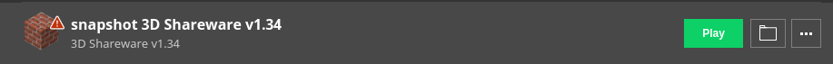Step 2. If this appears, just click "Play". Tick the box if you want to. Wait for the game to load.
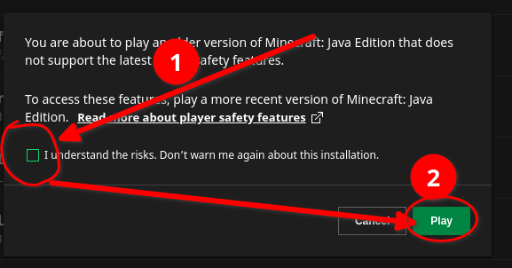Step 3. Click "Select Episode". Do not click on "ModemPlay(TM)" as it will NOT work
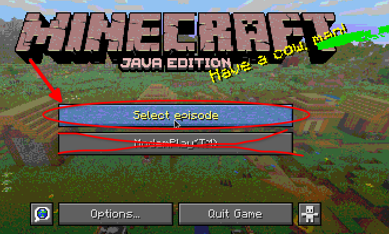Step 4. Click on "The play is you!"
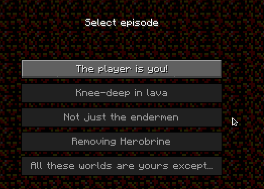Step 5. Click on "Hello, NoobVille". You can select any difficulty you want, but if you are only going to set up a server, I recommend doing the easiest option.
Once you select a difficulty, wait for a bit.
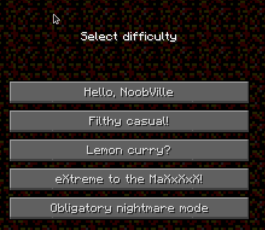Step 6. Pause the game, then click on "Open to LAN"
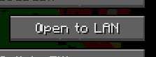Step 7. Enable Allow Cheats and then click "Start LAN World"
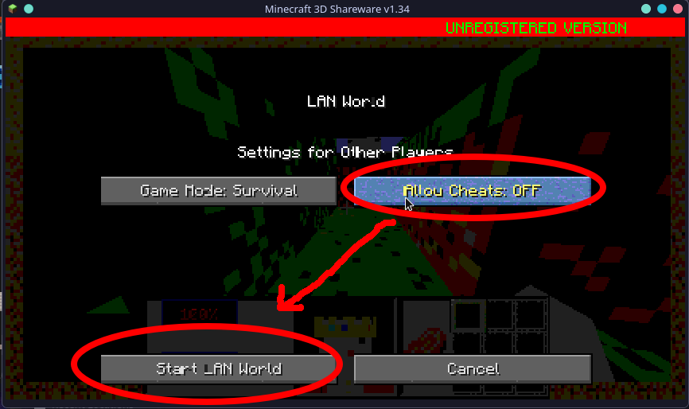Step 8. Open the Console. Then type "/kick @p" and press ENTER.
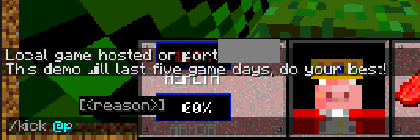Step 9. ... which will kick yourself from the world. Click on "Back to Server List"
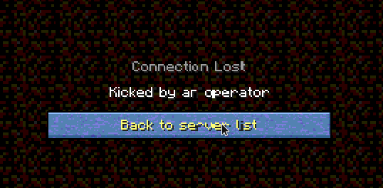Step 10. Have fun!
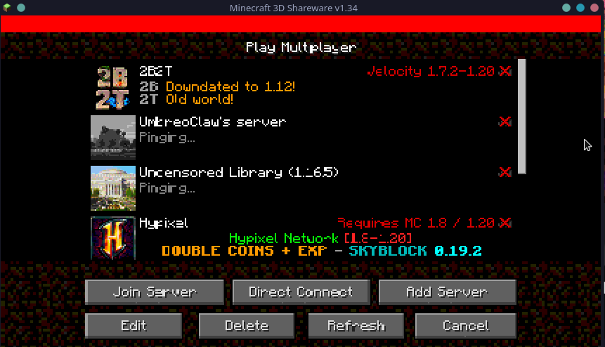A. Yes. You may need to help them get on to the multiplayer screen to join though
A. No you cannot. Snapshots (especially april fools snapshots) and Old versions of minecraft, Can't join realms.
A. If it supports the Open to LAN, then yeah maybe.
A. Maybe. While it is possible to create your own mods for this april fools version, please bear in mind that Modloaders like Forge (fabric is an except), doesn't support snapshots. Especially the April Fools ones. so you are either going to have to create your own mod, or beg the developers of the mod to make one.
A. Over here! :)
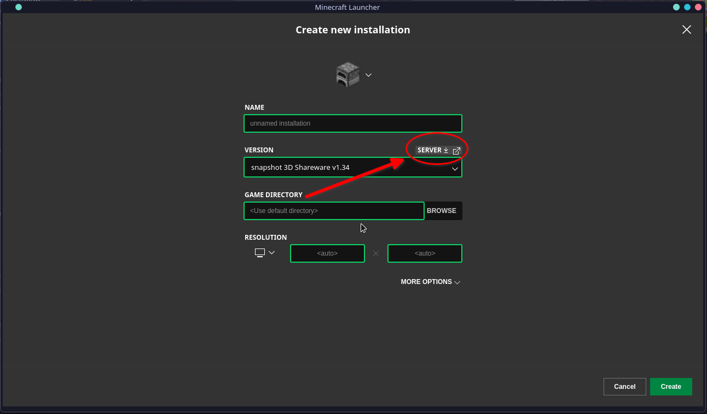if you have any questions, let me know! thanks.
Email me!